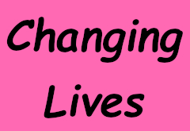
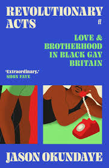
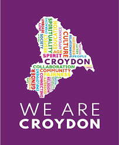
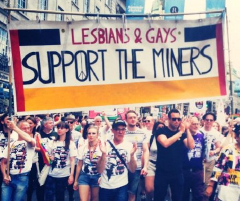

Meetings February to August 2025
Meetings on the second Tuesday of each month at 8 pm, currently at:
The Bread & Roses, 68 Clapham Manor Street,
London SW4 6DZ
(a turning off Clapham High Street - nearest tubes: Clapham North and Clapham Common.
The Bread and Roses is opposite
the end of Navy Street).
View a map of the area
| 11 February |
Living History Project:
Writer/photographer Steve Reeves describes his project “Before We Were
Proud” documenting the life stories of older members of the LGBTQ+ community,
particularly those who were young adults before the change in the law in
1967. |
|
|
| 11 March |
LGB Christians:
Rev Richard Kirker describes the aims and objectives of this new network,
particularly its questioning of current gender identity ideology. |
|
|
| 8 April |
Changing Lives:
SLG member Bill Boyd describes through his own personal experiences, how
being gay can dramatically change people’s lives . |
 |
|
| 13 May |
Revolutionary Acts: Author
Jason Okundaye talks about his book Revolutionary Acts: Love and Brotherhood
in Black Gay Britain in which he documents the experiences, memories and
challenges faced by black gay men from the 1950's to the present day. |
 |
|
| 10 June |
Foster Caring:
Members of the Croydon Council Fostering team describe their work and their
drive to recruit carers from diverse backgrounds, including from the LGBTQ+
community. |
 |
|
| 8 July |
Pride- Pits and Perverts: Mike
Jackson and Jonathan Blake from the London
Lesbians and Gays Support the Miners (LGSM) group tell the story of the
Lesbian and Gay support for the miners during their strike of 1984/85.
|
 |
|
| August |
No meeting |
|
Back to top of page